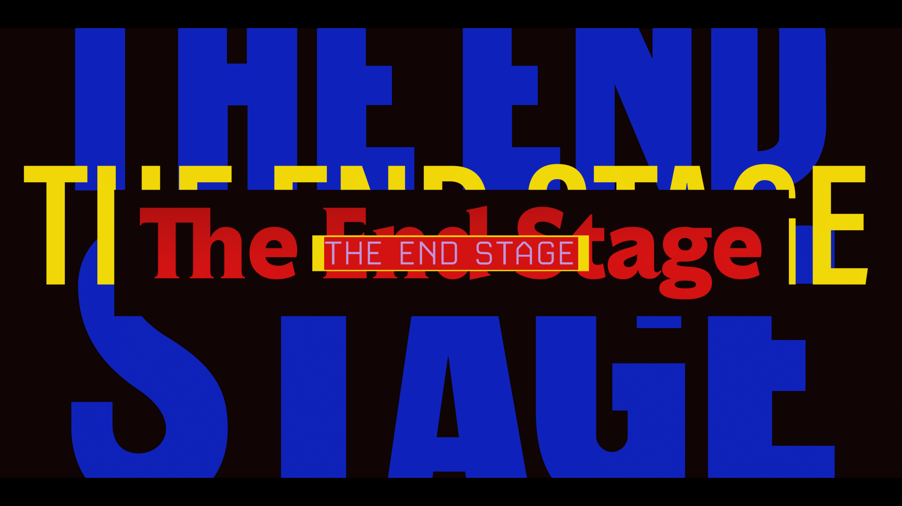

This video clip was made for the artist Halosaur to mark the release
of his album "Lonely Shapes" on Rythm and Cult. Filming took place
in the Oberschoneweide forest, Berlin, Germany.
Music written by Halosaur
Label: Rhythm Cult
Video producer: Charlene Levasseur
Actress: Julia Castel
DON'T WALK ALONE, video clip 4:00, 2019
Built in collaboration with the music producer Pablo Mateo. He was
inspired by the film Annihilation by Alex Garland. Charlene integrated
images that she tooks in Berlin's street. She comes to transform this
reel images in a fantastic way with the help of her digital skills,
this video grouping their common ideas.
Written: Pablo Mateo
Label: Figure
Video producer: Charlene Levasseur
I KNOW YOU WANNA BITCH, video clip 3:36, 2021
Here my interpretation of the single of Wei.xzy. "I know the feeling
when things ain't going the way I thought they would. I call these
times a stupid bitch. These two magic words set the rhythm. There are
four versions of a stupid bitch for y'all: trip original, accelerated
in the interpretation of Roma Zuckerman, hypnotizing, as if it would
be under thickened water, Bonus. Minimalistic by Beennooutside.
Music written: Wei.xzy
Master: Artyom Tuwalski
Label: Collective Russia
Video producer: Charlene Levasseur
Actress: Aya Ando and Kitty4000
Artwork: Eleonore Verger
Written and produced by Sara Boulet
Director: Sara and Cooksa
Photography director: Victor Soulié Pertersen
Lights: Cooksa and Victor Soulié Pertersen
Mixage and mastering: Charlène Levasseur

THE END STAGE
Documentary film, 2025
Welcome on board The Train of Capitalism.
The End Stage is a documentary film directed by South Korean director
Seungjae Oh. It is a pointed look at the COVID-19 pandemic and
capitalism. Oh brings together an international cohort of thinkers
to contemplate the connection between COVID-19, capitalism, and
climate change. These thinkers include Pulitzer Prize journalist
and author Laurie Garrett, American academic and animal behaviorist
Temple Grandin, and NASA’s climatologist Gavin Schmidt. Philosopher
Slavoj Zizek sets the stage by claiming that first-world societies
are riding comfortably on a train while the effects of global warming
torment the rest of the world. However, if we do not pull the emergency
brake, our train will collide head-on to an oncoming train.
Walter Benjamin:
“Marx says that revolutions are the locomotive of world history.
But perhaps it is quite otherwise. Perhaps revolutions are an attempt
by the passengers on this train—namely, the human race—to activate
the emergency brake.”
1
As part of the ‘Résidence 1+2 Hors les murs #8’ programme, organised
with the support of the Town of Castelnau d’Estretéfonds (31) and
in partnership with the association Le Capech à la Côte, I developed
a photographic project on Eurocentre, a jointly planned development
zone situated at the junction of several European transport routes
to the north of Toulouse.
"Croisements" est le récit d’une immersion de trois mois au cœur
d’une ZAC, axé sur ses points de rencontre, ses frictions silencieuses
et les personnes qui lui donnent corps et humanité. Là où les
infrastructures semblent primer, j’ai cherché à saisir les petites
lueurs : gestes, regards, présence d’animaux et détails du paysage
qui témoignent d’une négociation permanente entre les systèmes
industriels et les organismes vivants
Director: Pauline Dupin
Production: Mediatheque d'Estretefond, Aurore Degoit,
Dorris France-Oillan Menyé et Cathy Tran Tu San.
Photographies: Pauline Dupin
Video production and photography editing: Pauline Dupin and
Maxime Duhamed
Music written: Charlene Levasseur
Mixage and mastering: Charlene Levasseur
An independent photography film featuring interviews images taken
in a intensive workshop during summer 2025, including images from
the participants.
Director: Julia Castel and Gabrielle Duplantier
Video production: Julia Castel and Gabrielle Duplantier
Photography editing: Julia Castel and Gabrielle Duplantier
Sound editing: Charlene Levasseur
Mixage and mastering: Charlene Levasseur
An independent photography film featuring interviews images taken
in a intensive workshop during summer 2024, including images from
the participants.
Director: Julia Castel and Michael Ackerman
Video production: Julia Castel and Michael Ackerman
Photography editing: Julia Castel and Michael Ackerman
Sound editing: Charlene Levasseur
Mixage and mastering: Charlene Levasseur
An independent photography film featuring interviews images taken
in a intensive workshop during summer 2024, including images from
Anna Sweden, Marie Julliard, Vincent Boissonnat, Catherine,
Virginie Gueguen.
Director: Julia Castel and Patricia Morosan
Video production: Julia Castel and Patricia Morosan
Photography editing: Julia Castel and Patricia Morosan
Sound design: Charlène Levasseur and Marie Deback
Sound editing: Charlène Levasseur
Mixage and mastering: Charlène Levasseur
An independent photography film featuring interviews images taken
in a intensive workshop during summer 2023. Intuitive photography
with Martin Bogren. Martin Bogren is a Swedish photographer based
in Berlin. Since 2008 he has been the author of critically acclaimed
photobooks including Tractor Boys, Italia, August Song, Passenger
and his recently published Metropolia. He has exhibited at numerous
galleries internationally and is represented by Galerie VU in Paris.
Director: Patricia Morosan
Video production: Julia Castel and Patricia Morosan
Photography editing: Julia Castel and Patricia Morosan
Sound editing: Charlène Levasseur
Mixage and mastering: Charlène Levasseur